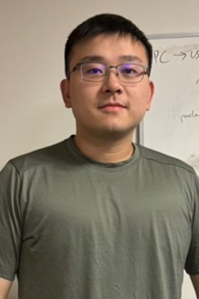

Yuankang Wang
yuw135[at]pitt[dot]eduYuankang received his B.S. degree in Materials Science and Engineering from Sichuan University in China. After that, he received B.S. and M.S. in Materials Science and Engineering from University of Pittsburgh. His previous research interest lies on microstructure-properties relationships of additive manufactured Fe-based and Ni-based alloys. He is now researching crystallization and corrosion behavior of high temperature magnetic materials.